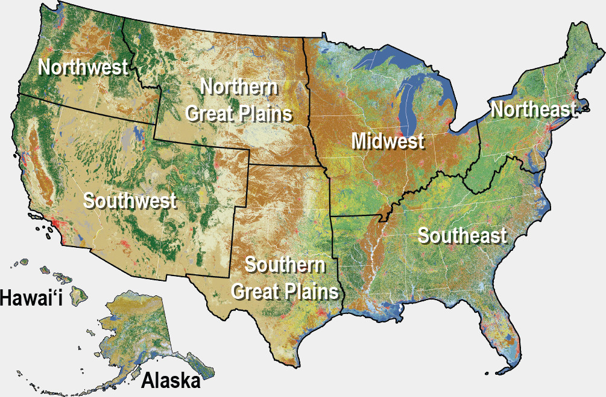
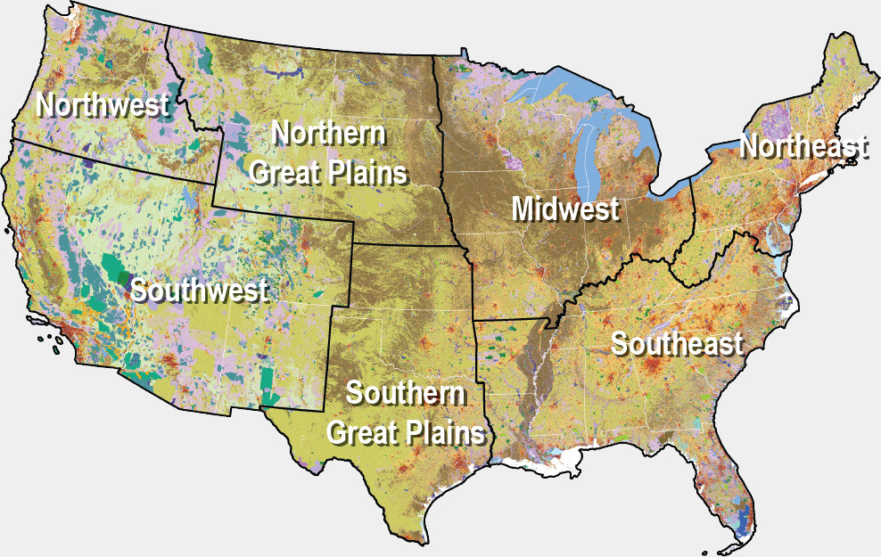

<h2>Figure 5.1.a: Land Cover Composition of the United States</h2>
<div class="graphic--stacked-bar figure--5_1__nlcd">
  <div class="graphic--stacked-bar-map">
    
  </div>
  <div class="stacked-bar"></div>
  <div class="graphic--stacked-bar--UI">
    <div class="graphic--stacked-bar--UI--item">
      <p>Land area as</p>
      <a class="type-changer type-changer--data" tabindex="0"><span class="type-changer--helper">%</span><span class="stacked-bar--UI--label">Percent</span><svg class="type-changer--dropdown" role="img" xmlns="http://www.w3.org/2000/svg" viewBox="0 0 320 512"><title>Switch units of bars</title><path fill="currentColor" d="M143 352.3L7 216.3c-9.4-9.4-9.4-24.6 0-33.9l22.6-22.6c9.4-9.4 24.6-9.4 33.9 0l96.4 96.4 96.4-96.4c9.4-9.4 24.6-9.4 33.9 0l22.6 22.6c9.4 9.4 9.4 24.6 0 33.9l-136 136c-9.2 9.4-24.4 9.4-33.8 0z"></path></svg></a>
    </div><div class="graphic--stacked-bar--UI--item">
      <p>Bars viewed as</p>
      <a class="type-changer type-changer--bar" tabindex="0"><span class="type-changer--helper stacked"><svg viewBox="0 0 16 16" role="img" xmlns="http://www.w3.org/2000/svg"><path class="type-changer--helper--grouped" d="M1,0h14v2h-14zm0,3h7v2h-7zm0,3h9v2h-9zm0,5h10v2h-10zm0,3h6v2h-6z"></path><path class="type-changer--helper--stacked" d="M1,0h7v4h-7zm8,0h3v4h-3zm4,0h2v4h-2z m-12,6h4v4h-4zm5,0h9v4h-9z m-5,6h3v4h-3zm4,0h5v4h-5zm6,0h4v4h-4z"></path></svg></span><span class="stacked-bar--UI--label">Stacked</span><svg class="type-changer--dropdown" role="img" xmlns="http://www.w3.org/2000/svg" viewBox="0 0 320 512"><title>Switch rendering of bars</title><path fill="currentColor" d="M143 352.3L7 216.3c-9.4-9.4-9.4-24.6 0-33.9l22.6-22.6c9.4-9.4 24.6-9.4 33.9 0l96.4 96.4 96.4-96.4c9.4-9.4 24.6-9.4 33.9 0l22.6 22.6c9.4 9.4 9.4 24.6 0 33.9l-136 136c-9.2 9.4-24.4 9.4-33.8 0z"></path></svg></a>
    </div>
  </div>
  <div class="graphic--stacked-bar--legend--wrapper"><p>Sort Land Cover Sectors</p>
    <div class="graphic--stacked-bar--legend"><div
          class="legend-item legend-item--agriculture"><a data-for="Agriculture" tabindex="0">Agriculture</a></div><div
          class="legend-item legend-item--barren"><a data-for="Barren" tabindex="0">Barren</a></div><div
          class="legend-item legend-item--developed"><a data-for="Developed" tabindex="0">Developed</a></div><div
          class="legend-item legend-item--forest"><a data-for="Forest" tabindex="0">Forest</a></div><div
          class="legend-item legend-item--grassshrub"><a data-for="Grass/Shrub" tabindex="0">Grass/Shrub</a></div><div
          class="legend-item legend-item--snowice"><a data-for="Snow/Ice" tabindex="0">Snow/Ice</a></div><div
          class="legend-item legend-item--water"><a data-for="Water" tabindex="0">Water</a></div><div
          class="legend-item legend-item--wetland"><a data-for="Wetland" tabindex="0">Wetland</a></div></div>
  </div>
  <div class="graphic--stacked-bar--region--wrapper"><p>Zoom into Region</p>
    <div class="graphic--stacked-bar--region"><div
          class="region-item region-item--alaska"><a data-for="Alaska" tabindex="0"><span>Alaska</span></a></div><div
          class="region-item region-item--hawaii"><a data-for="Hawaii" tabindex="0"><span>Hawai'i</span></a></div><div
          class="region-item region-item--midwest"><a data-for="Midwest" tabindex="0"><span>Midwest</span></a></div><div
          class="region-item region-item--northeast"><a data-for="Northeast" tabindex="0"><span>Northeast</span></a></div><div
          class="region-item region-item--northern-great-plains"><a data-for="Northern Great Plains" tabindex="0"><span>Northern Great Plains</span></a></div><div
          class="region-item region-item--northwest"><a data-for="Northwest" tabindex="0"><span>Northwest</span></a></div><div
          class="region-item region-item--southeast"><a data-for="Southeast" tabindex="0"><span>Southeast</span></a></div><div
          class="region-item region-item--southern-great-plains"><a data-for="Southern Great Plains" tabindex="0"><span>Southern Great Plains</span></a></div><div
          class="region-item region-item--southwest"><a data-for="Southwest" tabindex="0"><span>Southwest</span></a></div><div
          class="region-item region-item--zoomout inactive"><a data-for="zoomout"><span>View All Regions</span></a></div></div>
  </div>
</div>

<script src="https://d3js.org/d3.v4.min.js"></script>
<script src="../../interactives/5_1/d3-tip.js"></script>
<script src="../../interactives/5_1/figure5_1_nlcd.js"></script>
<link rel="stylesheet" href="../../interactives/5_1/figure5_1.css">


<h2>Figure 5.1.b: Land Use Composition of the United States</h2>
<div class="graphic--stacked-bar figure--5_1__nlud">
  <div class="graphic--stacked-bar-map">
    
  </div>
  <div class="stacked-bar"></div>
  <div class="graphic--stacked-bar--UI">
    <div class="graphic--stacked-bar--UI--item">
      <p>Land area as</p>
      <a class="type-changer type-changer--data" tabindex="0"><span class="type-changer--helper">%</span><span class="stacked-bar--UI--label">Percent</span><svg class="type-changer--dropdown" role="img" xmlns="http://www.w3.org/2000/svg" viewBox="0 0 320 512"><title>Switch units of bars</title><path fill="currentColor" d="M143 352.3L7 216.3c-9.4-9.4-9.4-24.6 0-33.9l22.6-22.6c9.4-9.4 24.6-9.4 33.9 0l96.4 96.4 96.4-96.4c9.4-9.4 24.6-9.4 33.9 0l22.6 22.6c9.4 9.4 9.4 24.6 0 33.9l-136 136c-9.2 9.4-24.4 9.4-33.8 0z"></path></svg></a>
    </div><div class="graphic--stacked-bar--UI--item">
      <p>Bars viewed as</p>
      <a class="type-changer type-changer--bar" tabindex="0"><span class="type-changer--helper stacked"><svg viewBox="0 0 16 16" role="img" xmlns="http://www.w3.org/2000/svg"><path class="type-changer--helper--grouped" d="M1,0h14v2h-14zm0,3h7v2h-7zm0,3h9v2h-9zm0,5h10v2h-10zm0,3h6v2h-6z"></path><path class="type-changer--helper--stacked" d="M1,0h7v4h-7zm8,0h3v4h-3zm4,0h2v4h-2z m-12,6h4v4h-4zm5,0h9v4h-9z m-5,6h3v4h-3zm4,0h5v4h-5zm6,0h4v4h-4z"></path></svg></span><span class="stacked-bar--UI--label">Stacked</span><svg class="type-changer--dropdown" role="img" xmlns="http://www.w3.org/2000/svg" viewBox="0 0 320 512"><title>Switch rendering of bars</title><path fill="currentColor" d="M143 352.3L7 216.3c-9.4-9.4-9.4-24.6 0-33.9l22.6-22.6c9.4-9.4 24.6-9.4 33.9 0l96.4 96.4 96.4-96.4c9.4-9.4 24.6-9.4 33.9 0l22.6 22.6c9.4 9.4 9.4 24.6 0 33.9l-136 136c-9.2 9.4-24.4 9.4-33.8 0z"></path></svg></a>
    </div>
  </div>
  <div class="graphic--stacked-bar--legend--wrapper"><p>Sort Land Use Sectors</p>
    <div class="graphic--stacked-bar--legend"><div
          class="legend-item legend-item--builtup"><a data-for="Built-up" tabindex="0">Built-Up</a></div><div
          class="legend-item legend-item--conservation"><a data-for="Conservation" tabindex="0">Conservation</a></div><div
          class="legend-item legend-item--production"><a data-for="Production" tabindex="0">Production</a></div><div
          class="legend-item legend-item--recreation"><a data-for="Recreation" tabindex="0">Recreation</a></div><div
          class="legend-item legend-item--water"><a data-for="Water" tabindex="0">Water</a></div></div>
  </div>
  <div class="graphic--stacked-bar--region--wrapper"><p>Zoom into Region</p>
    <div class="graphic--stacked-bar--region"><div
          class="region-item region-item--midwest"><a data-for="Midwest" tabindex="0"><span>Midwest</span></a></div><div
          class="region-item region-item--northeast"><a data-for="Northeast" tabindex="0"><span>Northeast</span></a></div><div
          class="region-item region-item--northern-great-plains"><a data-for="Northern Great Plains" tabindex="0"><span>Northern Great Plains</span></a></div><div
          class="region-item region-item--northwest"><a data-for="Northwest" tabindex="0"><span>Northwest</span></a></div><div
          class="region-item region-item--southeast"><a data-for="Southeast" tabindex="0"><span>Southeast</span></a></div><div
          class="region-item region-item--southern-great-plains"><a data-for="Southern Great Plains" tabindex="0"><span>Southern Great Plains</span></a></div><div
          class="region-item region-item--southwest"><a data-for="Southwest" tabindex="0"><span>Southwest</span></a></div><div
          class="region-item region-item--zoomout inactive"><a data-for="zoomout"><span>View All Regions</span></a></div></div>
  </div>
</div>

<script src="../../interactives/5_1/figure5_1_nlud.js"></script>
